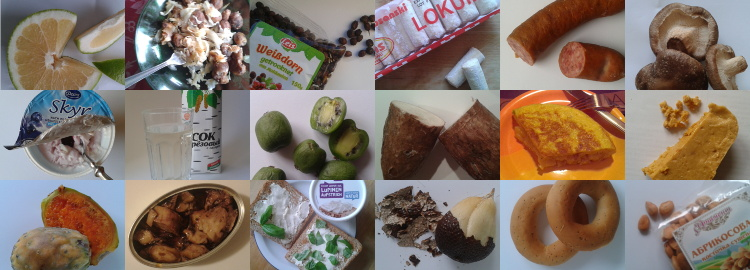

@charak
@charakGute Vorsätze
Im vergangenen Jahr bin ich über 120 Stunden spazieren gegangen – mindestens 20 Minuten jeden Tag. Das hatte ich mir als guten Vorsatz für 2016 vorgenommen. Ich arbeite viel am Computer und fand, gerade in der dunklen Jahreszeit ist Bewegung an frischer Luft eine gute Idee. Als kleine Motivation habe ich mir eine Karte meines Viertels gedruckt, in die ich die tägliche Route eingetragen habe. So bekam ich Lust, neue Strecken zu laufen und meine Spaziergänge in „unmarkierte“ Gebiete auszudehnen.

Zwanzig Minuten täglich waren eine gute Zeit: So kurz, dass man sie zur Not dazwischen schieben konnte; aber lang genug, um nicht nur einmal um den Block zu laufen. Tatsächlich führte mein längster Spaziergang mit einem Freund in über vier Stunden hinunter in den Regensburger Hafen, einmal um die Insel Untere Wöhrd und über die Steinerne Brücke und den Evangelischen Zentralfriedhof zurück in den Stadtsüden. Die kürzesten Spaziergänge waren dann abends noch schnell eine Schleife durch die näheren Nachbarstraßen.
Warum gute Vorsätze?
Eigentlich nehme ich mir jedes Jahr eine Kleinigkeit vor. Ich hatte schon komplett computerfreie Samstage, tägliche einfache Fitnessübungen, einen wöchentlichen Eintrag ins Tagebuch. Und auch etwas eher Abstraktes wie „nicht alles so schwer nehmen“.
Für mich das wichtigste an Vorsätzen ist, dass man sie beschließt, um sich selbst etwas Gutes zu tun. Man muss schon wirklich wollen, wofür man sich entscheidet; dann kann man den guten Vorsatz nämlich als Chance sehen, das jetzt mal durchzuziehen. Sich etwas nur vorzunehmen, weil andere es gut finden oder weil es aus irgendwelchen Gründen gesellschaftlich erwünscht ist, halte ich für wenig sinnvoll. Besser überlegt man sich etwas, in dem man wirklich einen Gewinn für sich sieht, womit man ein persönliches Ziel erreicht. Das muss auch nicht besonders aufwendig oder weltbewegend sein.
Durchhalten!
Es beginnt meist mit einer allgemeinen Idee, zum Beispiel „Mehr Bewegung wäre toll“ oder „Ich könnte wieder mehr Tagebuch schreiben“. Wenn das der ganze Vorsatz ist, dann wird es garantiert nichts. Der Trick ist, ganz konkret zu formulieren, was man tun möchte; also „Jeden Tag zwanzig Minuten spazieren gehen“ oder „Jede Woche eine halbe Seite schreiben“. Dinge, die man konkret tun kann, sind auch leichter umzusetzen als Dinge, die man unterlässt. Wenn man also eine schlechte Angewohnheit loswerden will, sucht man sich vielleicht einen guten Ersatz dafür, den man stattdessen umsetzt.
Was mich prima zum Durchhalten motiviert, ist eine Art Dokumentation – wie die oben genannte Spaziergehkarte. Beim Tagebuchschreiben habe ich neben das Datum einfach immer die Wochennummer notiert und hatte damit eine Rückmeldung und den Wunsch, die Serie fortzusetzen.
Ein guter Trick ist, Freunden vom guten Vorsatz zu erzählen – vor allem, warum man das macht und was man sich davon erhofft. Dabei bestärkt man sich selbst gleich mit. Auch Zwischenziele können motivieren (nach dem 10. Fitnessstudiobesuch, nach 50 vegetarischen Mahlzeiten, …). Dafür darf man sich dann auch ruhig mal belohnen; möglichst mit etwas, das nicht direkt mit guten Vorsatz zu tun hat – also kein Extra-Stück Torte beim Abnehm-Ziel.
Sich selbst überlistet man, indem man die Schwierigkeit erst allmählich steigert. Bei meinen Fitnessübungen war die Anzahl der Wiederholungen an die Wochennummer gekoppelt. Es ging im Januar also ganz simpel mit täglich einer Liegestütze, Kniebeuge etc. los und steigerte sich dann auf 52 Wiederholungen am Jahresende (die ich dann aber nicht mehr am Stück gemacht habe ☺).
Ein bisschen Scheitern ist erlaubt
Was einem Vorsatz sehr schadet ist Perfektionismus. Sehr leicht gibt man eine Sache nämlich auf, weil sie nicht hundertprozentig so klappt, wie man sie sich vorgenommen hat. Beispielsweise war ich nach schwerer Gartenarbeit mal zu erschöpft für noch einen Spaziergang, hatte ihn an einem Tag einfach vergessen, fühlte mich zu erkältet oder habe stattdessen den Keller aufgeräumt. Es ist okay, sich ein paar solcher Nachlässigkeiten zu gestatten. Ein zu 97 % erfüllter Vorsatz ist besser, als einer, der Ende Januar gänzlich abgebrochen wird.
Für 2017 habe ich mir übrigens vorgenommen, jede Woche ein mir unbekanntes Lebensmittel zu probieren. Ich möchte meinen Geschmack herausfordern, bewusster essen und vielfältiger einkaufen. Bin gespannt, ob ich 52 unterschiedliche Nahrungsmittel finde, die ich bisher noch nicht gegessen habe. Vielleicht lockere ich den Vorsatz auch ein wenig und lasse auch Dinge gelten, die ich seit mehr als fünf Jahren nicht mehr probiert habe (beispielsweise Litschis oder rote Beete).
Update 3. Mai 2017
Ein Drittel des Jahres ist vergangen und ich möchte diesen Blogeintrag nutzen, um einen Zwischenstand meines Vorsatzes zu veröffentlichen. In den ersten 18 Wochen habe ich folgende Lebensmittel zum ersten Mal probiert:

- Sweetie
- Spitzkohl
- Weißdornbeeren
- Lokum
- Wildschwein-Wurst
- Shiitake-Pilze
- Skyr
- Birkensaft
- Kiwibeeren
- Maniok
- Kartoffel-Tortilla
- Turrón
- Kaktusfeige
- Tintenfisch
- Lupinen-Aufstrich
- Schlangenfrucht
- Baranki
- Aprikosenkerne
Wie haltet ihr es mit guten Vorsätzen? Habt ihr euch eine Herausforderung für 2017 vorgenommen? Gibt es etwas mit dem ihr leider immer wieder scheitert? Ich freue mich über Kommentare!